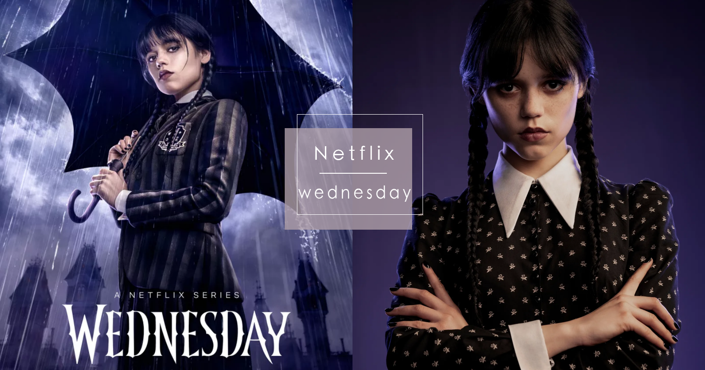
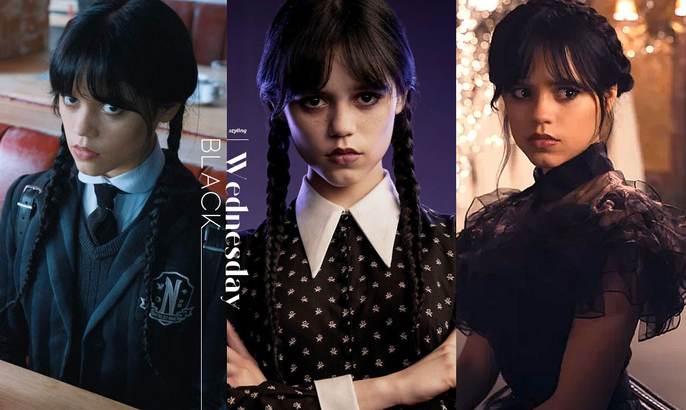

×
首頁
關於我們
我們的產品
化妝風格
相關活動
自然妝感
自然的妝感可營造出健康、光澤和自然的外貌，突出肌膚的自然之美。
自然底妝：
使用輕薄的粉底或BB霜，以勻稱的方式塗抹在整個臉部，使肌膚看起來自然而均勻。避免過度遮蓋，保留肌膚的光澤和質感。
淡雅眼妝：
采用淡雅的色彩，如淺粉、淡褐、淡紫等。使用柔和的眼影色彩，輕輕暈染在眼窩和眼瞼上，以突出眼部的明亮和清新感。
修容和腮紅：
使用輕柔的修容粉或蜜粉，在面部輪廓上輕輕刷上，突出面部的立體感。選擇柔和的腮紅色調，輕輕塗抹在苹果肌上，營造出健康紅潤的效果。
唇妝：
選擇粉色、裸色或淡桃色的唇膏或潤唇膏以營造出柔和、滋潤的唇部效果。可以使用唇刷或指尖輕輕塗抹，打造出輕盈的唇妝效果。
眉妝：
強調自然的眉毛形狀。使用眉筆或眉粉輕輕填補眉毛的空隙，以強調眉毛的自然輪廓。避免過於濃重或夸張的眉妝，保持眉毛的自然感覺。
哥特風格
哥特風格是一種獨特而引人注目的化妝風格，也是個人個性的表達，通常與黑暗、神秘、浪漫和古老的元素相聯系，他有以下特徵：
蒼白肌膚：
哥特風格通常強調蒼白的肌膚。為了達到這種效果，使用較淺的粉底或遮瑕產品，並避免使用過多的腮紅。
深邃眼妝：
哥特風格的眼妝常常以深色為主，如黑色、深紫色或深藍色。常用的眼影包括煙燻妝或強調眼窩的陰影。黑色眼線和濃密的睫毛也是哥特風格的重要元素。
強調唇妝：
在哥特風格中，唇部通常強調鮮明的顏色。黑色、深紅色、深紫色或者黑紫色的唇膏或口紅都是常見的選擇。這種對比強烈的唇色能夠突出整個妝容的特殊氛圍。
眉毛塑造：
哥特風格常常注重眉毛的形狀和定義。一些人選擇修剪成細長的眉毛，或者使用眉筆或眉粉填補眉毛，以突出眼部妝容。
着重於指甲：
哥特風格常常注重指甲的裝飾。黑色、紅色或金屬質感的指甲油常用來營造出神秘、奢華的感覺。也可以通過添加紋理、貼上水晶或其他裝飾物來增添個性。


日系娃娃妝
日本的化妝師擅長化上娃娃妝，在視覺上縮小臉型，令人看起來更年輕。只要學習3點要訣，自己也能輕鬆做到逆齡妝容
營造水汪汪的大眼：
眼妝一直是日系娃娃妝的重點，想要強調眼部輪廓，突出明亮的大眼睛，可從眉形，眼睫毛及臥蠶著手。
要走甜美風格，建議修妥眉毛的菱角，打造不強調眉峰的平眉。除了眉尾之外，整條眉毛的粗幼度保持一致，最後再將眉尾微微向下勾畫，讓整體線條更柔和。
將臉蛋修飾成娃娃臉的比例：先把胭脂掃壓扁，再以橫向的方式把胭脂從顴骨較下的位置向臉部外圍推開。最後用Highlighter在眼底正下方以畫圈的方式掃上，為蘋果肌增添光澤感。
#打造水潤豐滿的嘴唇：選用高光澤度的粉紅、橘色系唇膏，締造水潤光澤的嘴唇。
SPARK&FOCUS ©；2023
Free html Templates